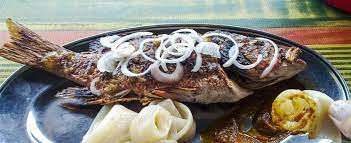

Kondrè avec la chèvre

Description
Le poisson braisé comme son nom l'indique est juste un barbecue de poisson
Ingredients
- 2 kg poisson
- 2-3 sachets Secret Sauce Fish
Etapes
- Nettoyez et rincez le poisson
- Trempez le poisson dans de l’eau salée (15min).
- Égouttez dans une passoire et entaillez.
- Faites mariner avec 1 sachet de Secret Sauce Fish et de l’huile.
- Enfin passez-le au barbecue.
Notes
Accompagnement : Miondo, frites de plantain, ... etc.
NB : Écrasez le piment avec 1 sachet de Secret Sauce Fish. Enfin servez votre poisson braisé avec comme condiment Secret Sauce Fish et du piment (au choix).